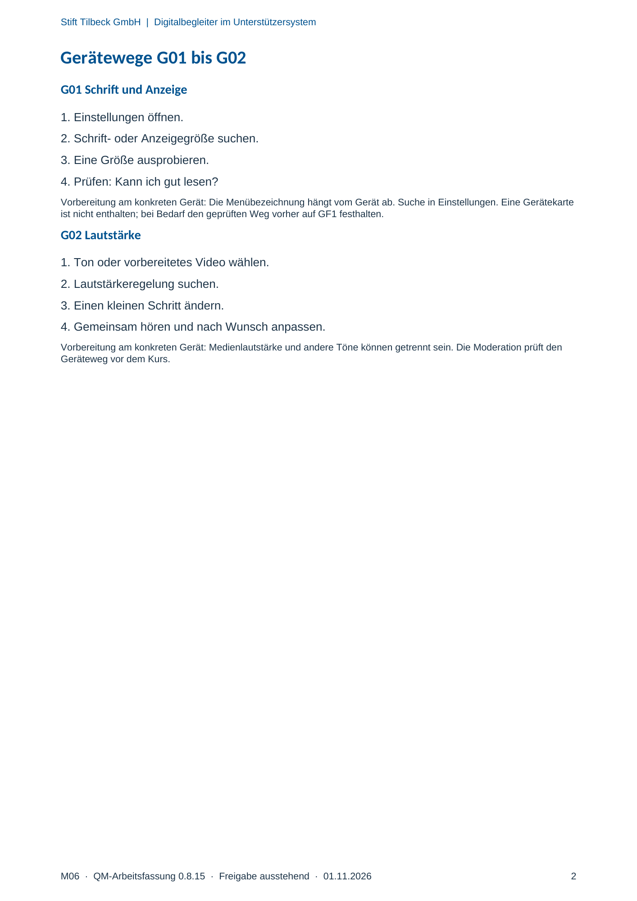

M06 · Originalseite 2
Lautstärke
Original-Druckseite mit G02. Auf derselben Seite stehen außerdem G01. Diese sind dadurch keine zusätzliche Aufgabe.
Fragen und Ankreuzfelder werden auf dem Ausdruck bearbeitet. Die Lesefassung speichert keine Antworten.
Lesefassung · Seite 2
Stift Tilbeck GmbH | Digitalbegleiter im Unterstützersystem
M06 · QM-Arbeitsfassung 0.8.15 · Freigabe ausstehend · 01.11.2026 2
Gerätewege G01 bis G02
G01 Schrift und Anzeige
1. Einstellungen öffnen.
2. Schrift- oder Anzeigegröße suchen.
3. Eine Größe ausprobieren.
4. Prüfen: Kann ich gut lesen?
Vorbereitung am konkreten Gerät: Die Menübezeichnung hängt vom Gerät ab. Suche in Einstellungen. Eine Gerätekarte
ist nicht enthalten; bei Bedarf den geprüften Weg vorher auf GF1 festhalten.
G02 Lautstärke
1. Ton oder vorbereitetes Video wählen.
2. Lautstärkeregelung suchen.
3. Einen kleinen Schritt ändern.
4. Gemeinsam hören und nach Wunsch anpassen.
Vorbereitung am konkreten Gerät: Medienlautstärke und andere Töne können getrennt sein. Die Moderation prüft den
Geräteweg vor dem Kurs.
Originalseite ansehen
